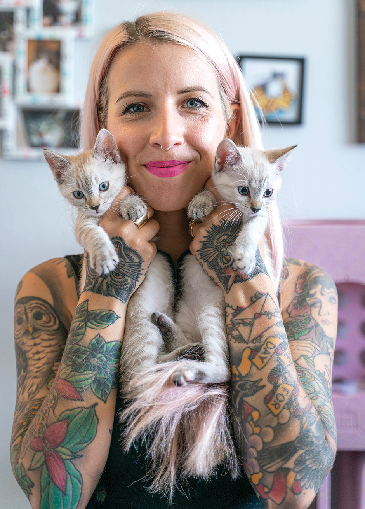
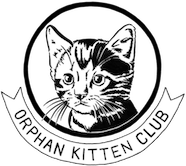

Saving The Tinies Felines
About her
Hannah Shaw (or Kitten Lady) is a kitten rescuer, humane educator, and New York Times bestselling author who has dedicated her life to finding innovate ways to protect animals.
Kitten Lady provides educational media, training resources, and instructional workshops that help individuals and animal shelters learn how to save the lives of kittens -in a fun and engaging format.
Awards
Shaw has received several awards for her advocacy work:
- The 2019 Cat Advocate of the Year award by ASPCA.
- The 2018 Advocacy Award by Kitten Rescue LA.
- And the 2017 Advocate of the Year award by CatCon Worldwide.
- Also, she was named one San Diego CIty Beat's "People of the Year" for 2018.
Organizations
Shaw is also the founder of Orphan Kitten Club, a 501(c)3 (nonprofit) charitable organization which provides lifesaving programs including a neonatal kitten nursery, a TNR program, and the world's first grant program specifically funding innovation in kitten welfare.
Social Life
She also shares inspiring and adorable images from daily life of a kitten advocate on her Instagram And Facebook , and educational videos about kitten care through her Youtube Channel.